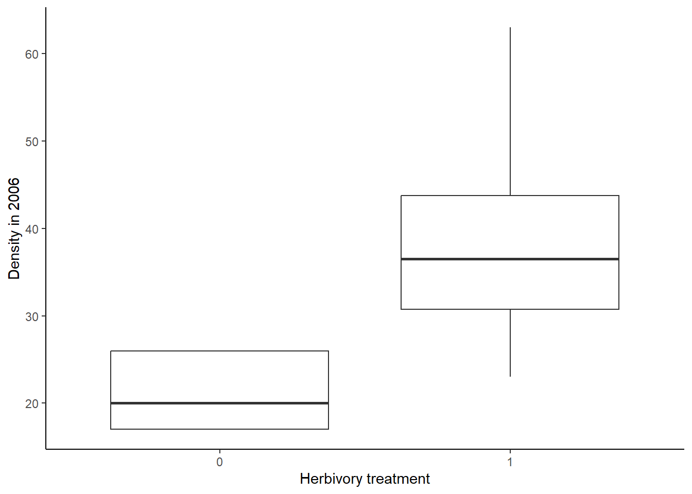
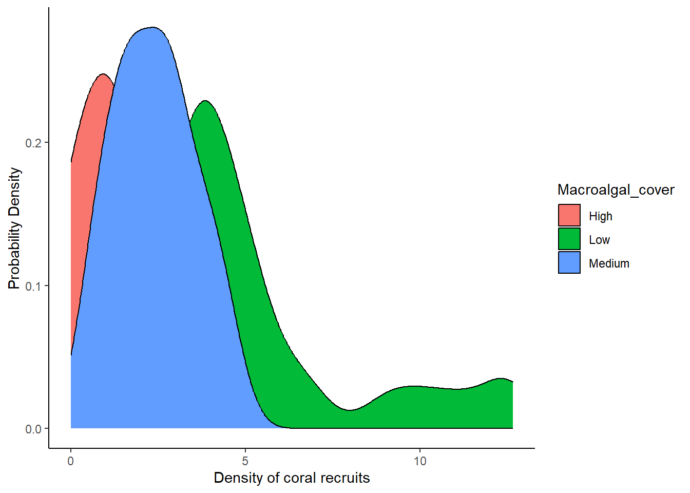
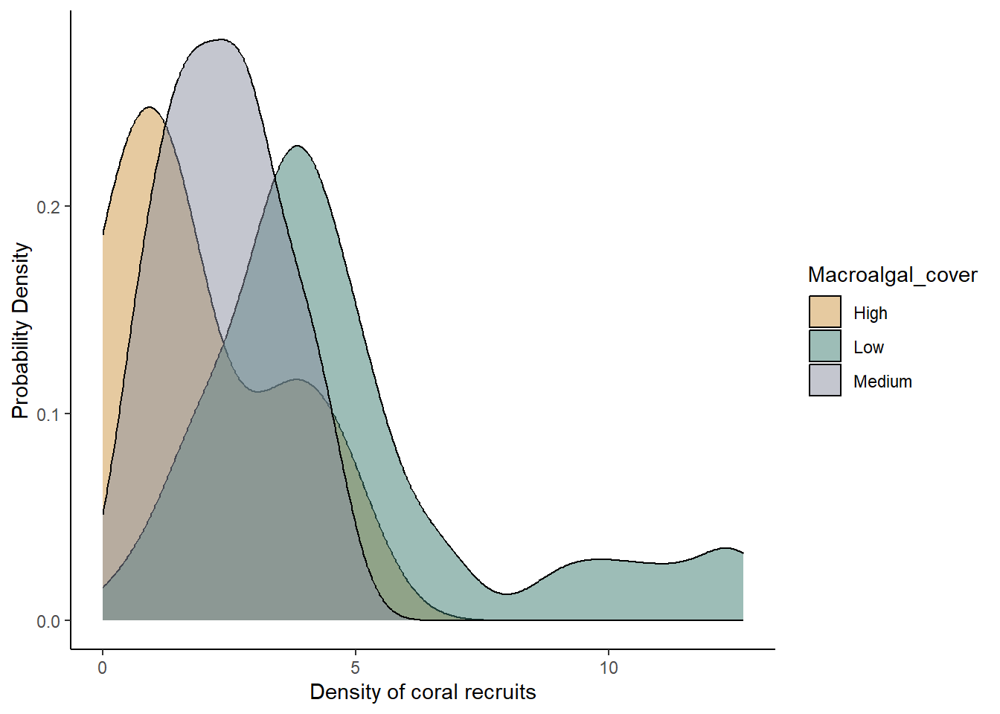
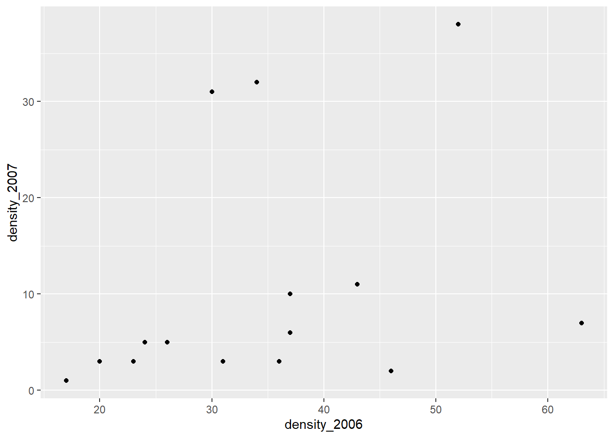

R Handbook Lesson 6
Emily Schultz
2026-02-07
Lesson 6: Graphing in R
In Lesson 5, you practiced selecting graphs to visualize different types on data. In this lesson, you will learn how to make those graphs in R.
We will use the ggplot2 package to create the graphs, so load it now.
library(ggplot2)The data set we will work with as we explore graphing is a data set from the Moorea Long Term Ecological Research site on how coral recruitment is affected by macroalgae cover.
Download the data set (Recruit_densities_MRB.csv) from Canvas, set your working directory to the folder that contains the file, and load the file into R. Call the data set “coral”.
coral <- read.csv("Recruit_densities_MRB.csv")6.1 General Structure of ggplot code
In this class, we will primarily use the ggplot package for graphing data. You can graph data in R without using an extra package, and the syntax is a bit simpler for just making a basic graph, but the graphs are lower quality, and it takes more work to modify the graph to make it a publication-quality figure. Using the ggplot package, it takes a little more coding to simply make the graphs, but it is easier to make high-quality figures, which is why we will focus on graphing with the ggplot package.
Before we get into the code for making specific types of graphs, I will describe the general structure of the code for making ggplot graphs.
To initialize a ggplot graph, you start with a line of code, using
the ggplot function. The first argument for the function is
the name of the data frame that contains the data you want to graph. The
section argument goes inside the aes (aesthetics) function.
Inside the aes function, you will list the variables you
want the graph. You will need to include at least an x variable, but if
you are graphing the relationship between two variables, you will
include a y variable as well. You can also add additional variables if
you want to do something like use different colors for different groups
of data (we’ll see an example of that in the density plots below.)
The general structure for this opening line, if you have both an x and y variable, would look something like this (don’t try to run this code because it just shows the general structure and isn’t set up to graph any real data):
ggplot(data=DATEFRAME, aes(x=INDEPENDENTVARIABLE, y=DEPENDENTVARIABLE)Once you have written the code to initiate the graph, you can add additional lines of code to add layers to your graph. These layers can be the graph types themselves (bar, point, line) to instruct R to graph the data in a particular way. They can also be aesthetic changes that you want to make, such as changing the axis labels, specifying colors you want to use in the graph, or modifying the legend.
To add additional layers to the graph, you put a plus sign at the end
of the previous line, indicating to R that you are adding another line
of code to modify the graph. The example below shows what is would look
like to add a layer to create a scatterplot (using the
geom_point function) and then change the axis titles (using
the labs function).
ggplot(data=DATEFRAME, aes(x=INDEPENDENTVARIABLE, y=DEPENDENTVARIABLE) +
geom_point() +
labs(x = "Independent variable", y = "Dependent variable")Note that there are no arguments included in the
geom_point function. By default the graph type functions
will use the data frame and variables provided in the opening
ggplot function. As long as you don’t want to change that
data you are graphing, you don’t need to include those arguments. There
are also optional arguments for these functions that can be used to
change things like the size and color of the points you graph.
6.2 Histograms
Now that we’ve covered the basic structure of a ggplot graph, let’s make our first graph! We will begin with a histogram to visualize the distributions of two continuous variables in our data set: macroalgae cover (MacroCover2016_2022) and coral recruitment density (RecruitDen).
We’ll make the graph for algae cover first. To start, we’ll just create the basic histogram, and then we will add some additional lines of code to modify the aesthetics.
To make the histogram, you will start with the initial line that
includes the data frame name (coral) and variable we will be graphing.
Because we are making a histogram with shows the distribution of a
single variable, we only need to provide the x variable
(MacroCover2016_2022). At the end of the first line, be sure to add a
plus sign. Then, on the next line, you will use the
geom_histogram function to create the histogram for the
data:
ggplot(data=coral, aes(x=MacroCover2016_2022)) +
geom_histogram()## `stat_bin()` using `bins = 30`. Pick better value with `binwidth`.
Now let’s add in some additional lines to change some aesthetics.
First, we will use the labs function to change the x and y
axis labels. By default, R will use the variable name from the data
frame, but often these are abbreviations, have no spaces, etc., so we
often want to choose more sensible axis labels. The second thing we will
change is the theme. By default, ggplots have a grey grid in the
background. It’s not wrong, but I personally prefer a cleaner look, so I
like to use the classic theme (theme_classic), which has a
plain white background. Feel free to explore other ggplot themes and
find one that you like!
The full code to make the histogram and change the aesthetics will look like this:
ggplot(data=coral, aes(x=MacroCover2016_2022)) +
geom_histogram() +
labs(x="Macroalgae cover (percent)", y="Frequency") +
theme_classic()## `stat_bin()` using `bins = 30`. Pick better value with `binwidth`.
Now let’s do the same thing with our second variable: the density of coral recruits (RecruitDen). The code for this one will look almost exactly the same. We just have the change the name of the x variable in the first line and update our x axis label.
ggplot(data=coral, aes(x=RecruitDen)) +
geom_histogram() +
labs(x="Density of coral recruits", y="Frequency") +
theme_classic()## `stat_bin()` using `bins = 30`. Pick better value with `binwidth`.
What you can see from the histograms is that the distributions of the data for both variables are somewhat skewed. A lot of the values in the data set are low, but both have tails of higher values that are infrequent in the data. This is particularly true for the macroalgae cover data. This type of information can be very important when we make decisions about how to analyze our data.
Congratulations to those of you who have made your first ggplot in R! We’ll now look at some other graph types, but the code will be similar to what you have already used.
6.3 Bar graphs
The next type of graph we will make is a bar graph. In our coral data set, we don’t have a count variable to graph, but we can make a bar graph to show the frequency of one of the categorical variables in the data set. In addition to the continuous macroalgae cover variable that we graphed above, the data set has a categorical algae cover variable (Macroalgal_cover) that categorized the cover into low, medium, and high. If we wanted to use this categorical variable in our analysis, it could be useful to see our sample size in each of these categories. We can do that using a bar graph to show the frequency of data points in each category.
The code for making the bar graph will be almost identical to the
code we used to make the histogram. Once again, we are graphing the
frequency of a single variable (Macroalgal_cover), so we only need to
include an x variable in the first line. The only other change we will
make, in addition to the variable we are graphing, is the graph type in
the second line of code. This time we will use the geom_bar
function to make a bar graph instead of a histogram.
ggplot(data=coral, aes(x=Macroalgal_cover)) +
geom_bar() +
labs(x="Macroalgal cover", y="Sample size") +
theme_classic()
Based on this bar graph, we can see that we have a much higher sample size in the low algae cover than the medium and high algae cover.
6.4 Box plots
Now let’s move on to graphs with both an x and y variable, allowing us to see the relationship between two variables, starting with a boxplot. Box plots show the effect of a categorical independent variable on a continuous dependent variable.
Just like when we worked with ggplot in the previous section, we will
start by specifying the data and variables we want to include in our
graph. Because we are now interested in two variables, our independent
(macroalgae cover) and dependent (coral recruit density) variables, we
will specify both our x and y variable in the aes function.
In the following lines of code, we tell R to make a box plot, change the
axis labels, and use the classic theme that removes the background color
and gridlines.
ggplot(data = coral, aes(x = Macroalgal_cover, y = RecruitDen)) +
geom_boxplot() +
labs(x = "Macroalgal cover", y = "Density of coral recruits") +
theme_classic()
As a reminder, the median for each group is shown by the bar in the middle of each box. The boxes show the inter-quartile range (i.e., the bottom of the box shows the first quartile and the top of the box shows the third quartile). Therefore, 50% of the values in the data fall within the box. The whiskers (vertical lines you might see below and/or above the box) show the smallest and largest values in the data set that are no farther than 1.5 times the inter-quartile range from the first and third quartile, respectively.
From this graph, we can see that the density of coral recruits is highest in the low macroalgal cover category. There are even some outliers in that category that have a much higher density of coral recruits than we see in the rest of the plots.
6.5 Density Plots
Another type of graph that is effective when you have a categorical independent variable and a continuous dependent variable is a density plot. I personally like this type of plot because it shows the full distribution of the data, so it provides a lot of information. It is particularly effective when you only have a few values for your categorical variable.
We will make a density plot for the same data we used in our boxplot: looking at the effect of macroalgae cover (low, medium, or high) on the density of coral recruits. We’ll first make the graph with some aesthetic defaults, and then we will update the code to change some of the aesthetics.
Setting up the variables for a density plot is a little different
than what we did for the boxplot. In this case, we will be graphing the
frequency of a single variable (RecruitDen), like we did with the
histogram, so we will have an x variable but no y variable. However, to
show the difference in the distributions of coral recruit densities
between the three different macroalgae categories, we will graph the
distributions separately for each macroalgae category and show the
distribution in different colors. Therefore we will add Macroalgal_cover
as the “fill” variable in our aes function. This will tell
R to graph the distributions separately and use a different fill color
for each macroalgal cover category.
The only other change to the structure of the code that we have been
using is that we will this time use the geom_density
function to make a density plot.
ggplot(data = coral, aes(x = RecruitDen,fill=Macroalgal_cover))+
geom_density() +
labs(x = "Density of coral recruits", y = "Probability Density") +
theme_classic()
A couple things you might notice about the graph:
- The distributions overlap with each other, so, with a solid fill color, the distribution on top hides the distributions in the back.
- The default color scheme (in my opinion) is kinda ugly, and it is also not colorblind friendly.
We can make some aesthetic changes to address these problems:
Let’s start with the first problem. To allow us to better see the
distributions of all categories, we can make the fill of the
distributions semi-transparent. To do this, we’ll add in the optional
alpha argument to the geom_density function to
adjust the transparency. The value of alpha can range from 0 to 1, with
0 being completely transparent and 1. In the code below, I use a value
of 0.5, but feel free to play around with the value to see how it
affects the appearance.
To address the second problem (the color scheme itself), we can
manually change the colors we use for each category. To do so, we add
another line of code with the scale_fill_manual function.
Within this function, we can provide a list of values for the colors we
want to use. We must provide one color for each of the categories in our
data set, three in this case. I used the hex codes for the colors I
wanted to use, but you can also use color names like “blue”, “red”, or
“gray”. For more information and resources on choosing colors in R (and
where you can find color names and hex codes), see the section at the
end of this lesson called 6.7 A note
about color in R.
The full code for our density plot, with the aesthetic changes, is shown below.
ggplot(data = coral, aes(x = RecruitDen,fill=Macroalgal_cover))+
geom_density(alpha = 0.5) +
scale_fill_manual(values=c("#ce9642","#3b7c70","#898e9f")) +
labs(x = "Density of coral recruits", y = "Probability Density") +
theme_classic()
Here we have our final graph, showing the sample distributions for each macroalgal category. Like in the boxplot, we can see that coral recruitment was highest when macroalgal cover was low, but we can also see the full shape of the distribution for each category, including the long tail of high recruitment numbers in the low algal cover plots.
6.6 Scatterplot
We will now move on to our graph type with a continuous independent variable and a continuous dependent variable. To visualize these models, we will use scatter plots of the sample data along with trendlines to represent the overall relationship betwen the variables. Scatter plots are a good way to visualize the relationship between two continuous variables, so we can see how strongly they might be correlated, whether the relationship is positive or negative, and how much variation there is in the relationship.
For this graph, because we need two continuous variables, we will use the continuous macroalgae cover data (MacroCover2016_2022) as our independent variable and our coral recruit density (RecruitDen) variable as our dependent variable.
As usual, we will first specify the data set and variables (we will
again have an x and y variable because we want to visualize the
relationship between macroalgae cover and coral recruit density). We
will use the geom_point function to create the scatterplot,
and then we will add a line with the geom_smooth function
to add the trendline. In the geom_smooth function, we will
include the optional method argument to specify the method
(type of function) we want R to use to create the trendline. We set the
method to “lm”, short for “linear model”, which is the same type of
model we will work with when we run statistical tests for data like
these later in the semester. Otherwise, the structure of the code will
be similar to what we used for the other graphs.
ggplot(data = coral, aes(x = MacroCover2016_2022, y = RecruitDen))+
geom_point() +
geom_smooth(method = "lm") +
labs(x = "Macroalgae cover (percent)", y = "Density of coral recruits") +
theme_classic()## `geom_smooth()` using formula = 'y ~ x'
You should see a scatterplot with a trendline representing the relationship between the two variables, and shading to represent variation, or uncertainty, in the mean. In this case, the shading represents the 95% confidence interval, rather than the standard deviation. The 95% confidence interval basically says that if we repeated our experiment over and over again, we would expect the mean value estimated from our data to fall within that interval 95% of the time. Like the standard deviation, it is method of representing the variation in our data. Both measures (as well as variance and standard deviation) are acceptable ways of representing the variation. What is important is that when you present your results, you make it clear in your figure captions and text what measure of variation you used.
What we can see from the graph is that there is, in general, a negative relationship between macroalgae cover and density of coral recruits, but there is a lot of scatter around the line when macroalgae cover is very low.
6.7 A note about color in R
When we made our density plot, we included the
scale_fill_manual function to specify the colors we wanted
to use in the graph. You are not required to include this function. If
you leave it out, ggplot will automatically choose colors based on its
default color package. However, the ggplot’s default color palette is
not colorblind-friendly, so it is usually better to choose a different
color palette. Below are some links to websites that can help you choose
colors. When you list the colors you want to use, you can list the hex
codes (as we do in our code in this lesson) or the name of the color
(e.g., “blue”). If you use the scale_fill_manual function,
or a similar function, to specify colors, be sure to include one color
for every group in your variable. In our example, the variable displayed
by the colors only had three groups (low, medium, and high), so we
listed three colors.
List of useful R color websites:
ggplot 2 Quick reference: colors. This website includes a chart will color names in R, along with additional information about using color in ggplot.
ColorBrewer. The ColorBrewer website provides a set of color palettes that you can use in R. You can choose sequential, diverging, or qualitative palettes, and there is an option for selecting only colorblind-friendly palettes. The website will provide the hex codes for the colors in the palette.
MetBrewer. MetBrewer, which also has an associated R package, provides a set of color palettes based on works of art at the Metropolitan Museum of Art. Not all of the palettes are colorblind-friendly, but you can find a list of colorblind-friendly palettes at the bottom of the webpage.
Introduction to the viridis color maps. Viridis is an R package that has colorblind-friendly palettes. This website provides information on the use of the package. You can also see what some different R color palettes would look like to people with different forms of colorblindness.
Best Color Palettes for Scientific Figures and Data Visualizations This website has some general guidelines for the use of color in scientific publishing, along with some specific colorblind-friendly palettes, including the hex codes.
PNW colors. This R package has a set of colorblind friendly palettes based on photographs from the Pacific Northwest.
Exercises
There are many different types of graphs and ways we can modify our graphs using ggplot. We will cover some of these in future lessons as we get into statistical tests. But these types of graphs will give you a good starting point for exploring your own data sets! If you would like to explore more about data visualization using the ggplot package, the R for Data Science eBook is a good resource, and many other resources are a mere internet search away!